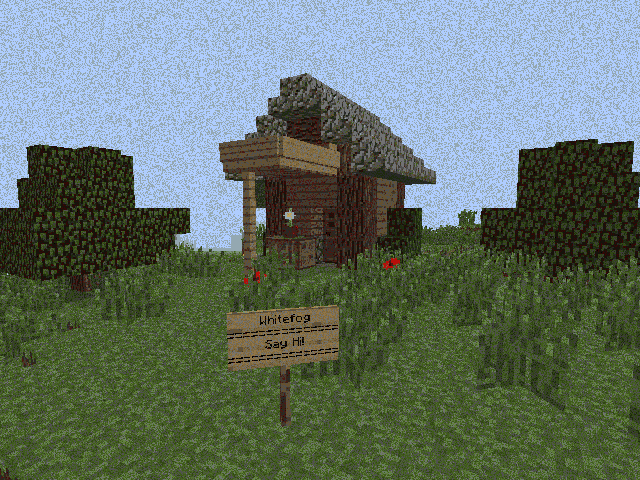

O Rabbit Hole da Geração de Mapas para jogos Roguelikes utilizando LLMs 🌍🔄🤖
Data de criação: 2025/08/25 | Última atualização: 2025/09/02

Brainstorm 🧠💡
Aqui irei criar uma bullet list com diversos temas e tópicos que precisam
ser abordados. É um rascunho ou uma promessa de coisas que podem ser
debatidas.